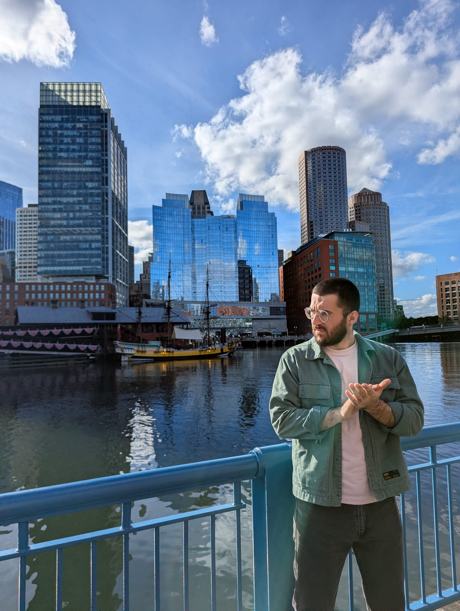
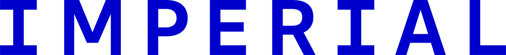
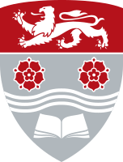
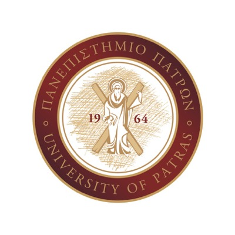
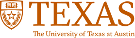
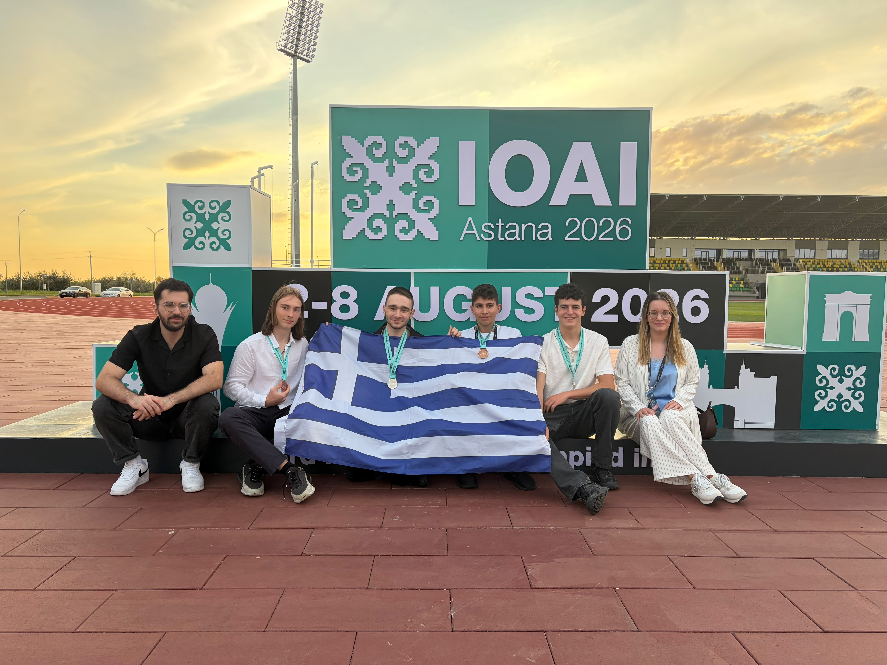
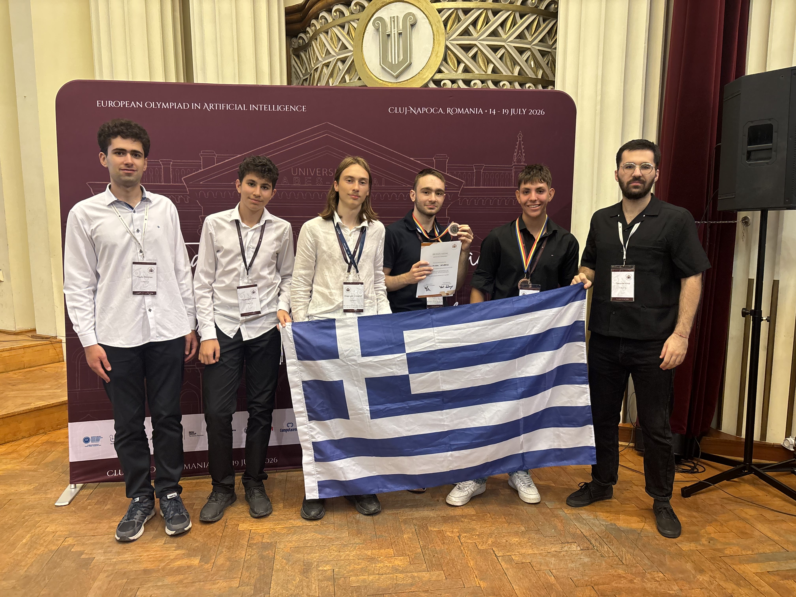

MaxSketch: Robust Distinct Counting in Streams via Random Projections
Count distinct objects in a stream without storing it all, even when repeat observations look different.
Standing on the shoulders of giants.
I study algorithms that come with guarantees, and ways to make machine learning more efficient. I’m a PhD researcher at the University of Athens and Archimedes. I’m fortunate to be advised by the amazing Christos Tzamos and Constantine Caramanis.
Open to ML research and applied scientist internships · Summer 2027

Recognized as a NeurIPS Top Reviewer
Helped organize an AI summer school for students




NeurIPS 2026 Top Reviewer. Reviewer for NeurIPS, ICML, and ICLR.
Team Greece leader for AI Olympiads. At our national AI competition (PDTN), I organize, set problems, teach students, and serve on the scientific committee.
I was a member of its founding team. The nonprofit promotes AI literacy in Greece.
Thalis mathematics contest award (Greek Mathematical Society, 2015) · Ranked third among students admitted to the Mathematics BSc at Patras.
Count distinct objects in a stream without storing it all, even when repeat observations look different.
Show how neural networks can find a simpler structure in data without strong pressure to simplify.
Learn a compact version of data that keeps distances nearly intact, instead of relying on a random map.
I lead and coach Team Greece for the AI Olympiads. Photos from Astana, Cluj, and Beijing.



I play amateur theatre, go to the gym, and like to exhaust myself with half marathons.